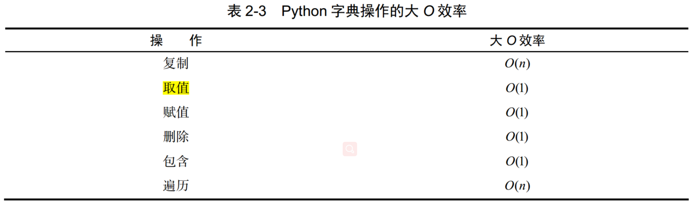

Python 数据结构与算法分析（第二章 算法分析）
1. 基本概念
- 算法分析：基于所使用的计算资源比较算法。如甲算法相较于乙算法具有更高的资源利用率或使用更少的资源，则算法甲优于算法乙。
- 计算资源：①考虑算法在解决问题时要占用的空间或内存；②考虑算法的执行时间或运行时间。
- 问题规模：如果将每一步看成基本计算单位，那么可以将算法的执行时间描述成解决问题所需的步骤数。例如，对于累加算法，初始化赋值执行步骤数为1，加和运算执行步骤数为，参数即为问题规模。则累加算法的运算时间为，即当问题规模为时，解决问题所需的时间是 ，即需要步。
- 数量级（大O记法）：数量级函数描述的就是，当增长时，增长最快的部分。数量级又被称为大O记法，表示为，其中为函数中起决定性作用的部分。提供了步骤数的有效近似。
| f(n) | 名称 | 算法 |
|---|---|---|
| 常数 | 一元运算、二元运算 | |
| 对数 | 二分法查找 | |
| 线性 | 累加求和 | |
| 对数线性 | 快速排序 | |
| 平方 | 排序 | |
| 指数 | 动态规划解TSP问题 | |
| 阶乘 | 暴力枚举 |
2. Python数据结构的性能
（1）列表

（2）字典

相较于列表，字典的取值和赋值操作均更高效。